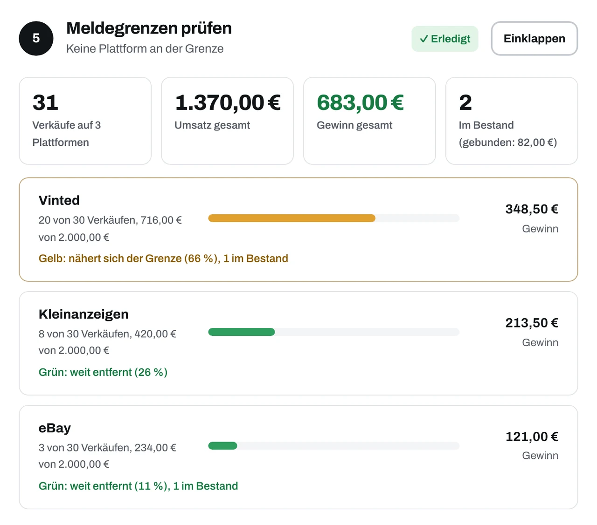
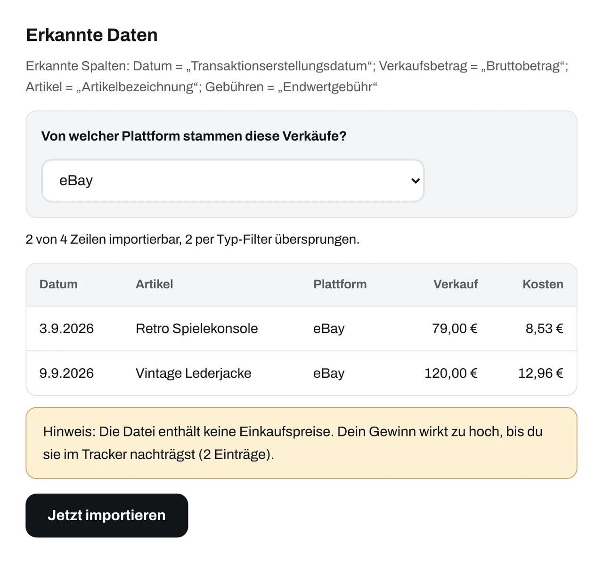

Check, was wirklich bleibt.
Wie nah bist du an der Meldegrenze? SellCheck zeigt es für jede Plattform. Dazu siehst du, was dir pro Artikel nach Einkauf und Versand bleibt.
Kostenlos und ohne Anmeldung. Deine Daten bleiben auf deinem Gerät.

Für Verkäufe auf Vinted, Kleinanzeigen, eBay, Etsy und Amazon, auf dem Flohmarkt und überall sonst, wo du verkaufst.
Probier es mit deinen Zahlen
Wähl eine Plattform und schieb die Regler auf deine Zahlen. Die Ampel zeigt sofort, wo du stehst.
Je Plattform und Jahr läuft ein eigener Zähler. Verkäufe auf verschiedenen Plattformen werden nicht zusammengezählt.
Eine Grenze genügt: Ab 30 Verkäufen oder 2.000 € Einnahmen wirst du in der Regel gemeldet. Gezählt werden abgeschlossene Verkäufe, nicht Artikel.
Eine Meldung ist keine Steuerforderung. Ob Steuern anfallen, entscheidet das Finanzamt. Liegst du weit darunter, zeigt SellCheck Grün, und auch das ist ein Ergebnis.
SellCheck warnt eher früher. Die Plattform zählt deine Einnahmen nach Abzug ihrer Gebühren, SellCheck nimmt den Verkaufspreis.
Quelle: Finanzamt NRW. Deine Eingaben hier werden weder gespeichert noch gesendet.
von 30
von 2.000 €
Der Punkt an jeder Plattform zeigt ihre Ampel. Orientierung, keine Steuerberatung.
Alle Plattformen im ÜberblickWarum ein Überblick hilft
Wer auf mehreren Plattformen verkauft, hat mehrere Zähler, aber nirgends das Gesamtbild. Vinted weiß nichts von deinen Verkäufen auf Kleinanzeigen, und was du insgesamt verdienst, weiß keine Plattform.
Bar bezahlte oder außerhalb abgewickelte Verkäufe sieht die Plattform nicht. In deinem Überblick stehen sie trotzdem, denn für die Frage privat oder gewerblich zählen sie mit.
Wer gelegentlich eigene Sachen verkauft, handelt in der Regel privat. Wer gezielt zum Weiterverkauf einkauft, gilt eher als gewerblich. Eine neutrale Checkliste in den Tools zeigt, worauf es ankommt.
Der Überblick in 50 Sekunden
Ein kurzer Film über Meldegrenze, Gewinn und Bestand. Alle Zahlen darin sind Beispieldaten.
Text zum Film
Vier Plattformen. Vier Zähler. Kein Überblick. Jede Plattform zählt getrennt. Ab dreißig Verkäufen oder zweitausend Euro im Jahr meldet sie an die Steuerbehörden.
SellCheck bringt alles an einem Ort zusammen: Gewinn pro Artikel, Meldegrenze je Plattform und Bestand. Der CSV-Import dauert Sekunden. Die Meldegrenze erscheint als Ampel, für jede Plattform. Und der Report liefert die Ausfüllhilfe für die Steuererklärung.
Kein Zugriff auf Konten. Daten bleiben im Browser. Orientierung statt Beratung. SellCheck. Check, was wirklich bleibt. Kostenlos, ohne Anmeldung.
Die Gratis-Tools
Sechs Werkzeuge, die direkt im Browser laufen. Du brauchst kein Konto, und SellCheck meldet sich nie bei deinen Plattformen an. Das Ergebnis schaltest du mit deiner E-Mail-Adresse frei, deine Eingaben bleiben auf deinem Gerät.
- Plattform-Überblick
- Verkäufe, Umsatz und Gewinn je Plattform, mit Ampel für jede Meldegrenze. Dazu dein Bestand und das Geld, das darin steckt.
- Steuer-Export
- Ausfüllhilfe für die Anlage EÜR oder die Anlage SO, dazu Journal und Summen als CSV für die Steuerberatung.
- Meldegrenzen-Ampel
- Verkäufe und Umsatz einer Plattform eintragen und sofort sehen: grün, gelb oder rot.
- Gewinn pro Artikel
- Einkauf, Verkauf und Versand eingeben. Gewinn und Marge stehen sofort da.
- Tracker mit Bestand und CSV
- Jeden Einkauf und Verkauf festhalten und am Jahresende als Tabelle exportieren.
- Privat oder gewerblich?
- Neutrale Checkliste mit den Merkmalen, auf die es ankommt. Keine Steuerberatung.

Für alle, die regelmäßig verkaufen
Für gelegentliche Verkäufe reichen die Gratis-Tools. Wer regelmäßig einkauft und auf mehreren Plattformen verkauft, braucht mehr Struktur: das Starter-Paket und bald die iPhone-App mit Essential und Premium.
Starter
In Vorbereitung- Guide „Verkaufen und Finanzamt“ (PDF)
- Gewinn-Tracker als Google-Sheet
- Checkliste „privat oder gewerblich?“
- Übersicht für die EÜR
- Geplant: später auf Essential angerechnet
Vorab gratis: Meldegrenze prüfen und die Tools.
Essential
Geplantoder 39 € im Jahr (3,25 € im Monat)
Aufzeichnen und weitergeben.
- Alles aus Basic, dazu:
- 150 statt 50 Artikel pro Jahr
- Sicherung im Konto, freiwillig
- PDF für die Steuer
Premium
Geplantoder 49 € im Jahr (4,08 € im Monat)
Vorausschauen und richtig rechnen.
- Alles aus Essential, dazu:
- Unbegrenzt viele Artikel
- Auswertung nach Plattform und Artikel
- Erinnerung vor der Meldegrenze
- Gewinn nach Umsatzsteuer (auch Differenzbesteuerung)
Was Nichtstun kostet: Eine Plattform-Meldung merkst du sonst erst hinterher. Liegende Ware bindet Geld.
Noch nicht erhältlich: Die iPhone-App ist in Entwicklung. Zum Start: 14 Tage kostenlos testen. In der App bleibt Basic kostenlos: 50 Artikel pro Jahr, ohne Konto.
Häufige Fragen
Gilt die Meldepflicht nur für Vinted?
Nein. Das Plattformen-Steuertransparenzgesetz knüpft an die Tätigkeit an, etwa den Verkauf von Waren, und nicht an einen einzelnen Anbieter. Gemeldet wird, sobald auf einer Plattform 30 Verkäufe oder 2.000 € Einnahmen im Jahr erreicht sind. Die Grenzen zählen pro Plattform.
Was zählt als Verkauf?
Kaufverträge, nicht Artikel. Ein Kauf mit mehreren Artikeln ist ein Verkauf.
- Unter 30 Verkäufen und unter 2.000 € Einnahmen im Jahr: in der Regel keine Meldung.
- Eine der beiden Grenzen erreicht: Die Plattform meldet.
- Keine Meldung heißt nicht steuerfrei.
Quelle: Finanzamt NRW
Wie ist das bei Kleinanzeigen?
Kleinanzeigen meldet nach eigener Auskunft nur Verkäufe, die über sein Bezahlsystem abgeschlossen wurden. Bar bezahlte oder außerhalb abgewickelte Verkäufe sieht die Plattform nicht. Für deinen Überblick und die Frage privat oder gewerblich zählen sie trotzdem.
Muss ich Steuern zahlen, wenn eine Plattform mich meldet?
Nicht automatisch. Die Meldung geht an das Bundeszentralamt für Steuern. Ob Steuern anfallen, entscheidet das Finanzamt im Einzelfall. Der Verkauf eigener gebrauchter Sachen ist in der Regel nicht steuerpflichtig. Wer gezielt zum Weiterverkauf einkauft, kann als gewerblich gelten.
Kann ich meine Daten direkt ans Finanzamt oder in ELSTER schicken?
Nein, das ist bewusst so. ELSTER nimmt Daten nur über „Mein ELSTER“ oder zertifizierte Software entgegen. SellCheck gibt dir deshalb:
- eine druckbare Aufstellung in der Reihenfolge der Anlage EÜR, die du in ELSTER abtippst,
- CSV-Dateien (Journal, Summen) für Steuerberatung oder Programme.
Einen CSV-Import für Steuersoftware wie WISO, smartsteuer oder Taxfix haben wir nicht belegt gefunden.
Brauche ich ein Konto?
Nein. Du nutzt die Tools ohne Anmeldung. Ergebnis, Report und Downloads schaltest du mit deiner E-Mail-Adresse frei. Deine Eingaben bleiben dabei auf deinem Gerät. Nur wenn du den Report per E-Mail anforderst, wird er einmalig übermittelt.
Welche Plattformen kann ich eintragen?
Vorgewählt sind Vinted, Kleinanzeigen, eBay, Etsy, Amazon, Flohmarkt/bar und Sonstige. Du trägst deine Verkäufe selbst ein, deshalb funktioniert jede Plattform.
Ist das Steuerberatung?
Nein. SellCheck bietet allgemeine Informationen, Rechner und Vorlagen. Für deinen Einzelfall wende dich an Finanzamt, Lohnsteuerhilfeverein oder Steuerberatung.
Muss ich meine Konten verbinden?
Nein. Die Gratis-Tools laufen komplett im Browser. Deine Eingaben werden nur lokal auf deinem Gerät gespeichert. Eine Ausnahme ist der Report per E-Mail, den du selbst anforderst.
Gehört SellCheck zu einer der Plattformen?
Nein. SellCheck ist ein unabhängiges Projekt und mit keiner der genannten Plattformen verbunden. Die Namen sind Marken ihrer jeweiligen Inhaber.
Was passiert mit meiner E-Mail-Adresse?
Sie schaltet Ergebnis, Report und Downloads frei. Wenn du es ankreuzt, senden wir dir den Report per E-Mail und Tipps und Tricks rund um Meldegrenzen, Fristen und neue Funktionen. Beides ist freiwillig und jederzeit abbestellbar. Mehr dazu in der Datenschutzerklärung.
Weißt du, wie nah du an der Meldegrenze bist?
Prüf es für jede Plattform. Kostenlos und ohne Anmeldung, das Ergebnis schaltest du mit deiner E-Mail-Adresse frei.
Meldegrenze für alle Plattformen prüfen